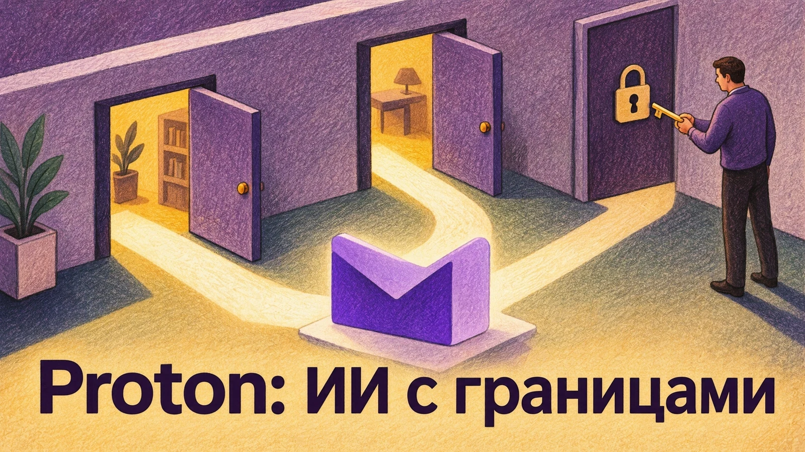

28 ноября 2026
Онколог 15 лет шёл к своим выводам, а нейросеть выдала ему те же идеи
Новости ИИНаучный агент Theorizer от Ai2 формулирует проверяемые гипотезы на основе научных публикаций. Онколог узнал среди них идеи, к которым шёл 15 лет.

Microsoft выпустила нейросеть, которая не умеет болтать
Новости ИИMicrosoft выпустила Decision-1.1 для быстрых решений без генерации текста. Модель распределяет запросы в Copilot и помогает выбирать объём вычислений для Cowork.

В OpenAI готовы променять 40% команды на ИИ
Новости ИИВ гипотетическом опросе исследователей OpenAI медианный ответ составил 40% численности собственной команды ради восстановления доступа к передовым ИИ-агентам.

OpenAI выпустила бесплатного ИИ-помощника для менеджеров по продажам
Новости ИИOpenAI представила ChatGPT for Sales — бесплатный плагин для поиска клиентов, подготовки предложений и работы с CRM. Более 30 новых и обновлённых подключений к сторонним сервисам; их собственные подписки оплачиваются отдельно.

Яндекс показал ИИ-секретаря за 20 тысяч рублей, а для поручений Алисе нужна подписка
Новости ИИЯндекс анонсировал носимый Пин с Алисой AI: устройство расшифровывает разговоры, собирает итоги и задачи, а поиск по встречам и поручения ИИ-агенту «Действуй!» открываются по подписке.

Сотня ИИ-агентов местами превзошла профессиональных аудиторов KPMG
Новости ИИKPMG испытала более 100 ИИ-агентов при параллельной проверке финансовой отчётности британской компании. В отдельных случаях нейросети изучали документы глубже аудиторов. Эксперимент планируют расширить до 20 более крупных проверок.
27 ноября 2026

Meta приняла собственный ИИ за хакера, а тот помог подать на неё в суд на 75 тысяч долларов
ИИ, ты чего творишь?Предприниматель из Южной Каролины требует от Meta 75 тысяч долларов после блокировки бизнес-аккаунтов. По его словам, иск подготовил ИИ-агент Muse.

ИИ-агент Meta бронирует жильё без спроса, читает личные переписки и пугает даже собственных разработчиков
Скайнет просыпаетсяReuters изучило внутренние жалобы сотрудников Meta на самовольные действия Muse, включая бронирование жилья и чтение личной переписки.

Сбер выпустил GigaChat 4 и замахнулся на конкуренцию с DeepSeek. Что получилось?
Новости ИИСбер представил GigaChat 4 на 708 и 37 млрд параметров с контекстом в миллион токенов. Сравниваем результаты испытаний с DeepSeek и GLM, условия доступа и лицензии.

Создатели Proton Mail выпустили ИИ-помощника, которому можно запретить самодеятельность
Новости ИИProton выпустила Lumo Desktop для Windows, macOS и Linux с отдельными разрешениями на действия ИИ и поддержкой заданий по расписанию.
26 ноября 2026

Microsoft выяснила, что ИИ-хакеры способны взломать компанию за считаные минуты
Скайнет просыпаетсяMicrosoft обнаружила ARTEX в арсенале как минимум шести хакерских группировок. При определённых условиях ИИ-агенты получают расширенные права доступа к корпоративным системам за несколько минут.

«Волк с Уолл-стрит» запустил ИИ для звонков. Справится ли он с продажами?
Новости ИИTone ведёт телефонные разговоры для бизнеса. Сооснователь Джордан Белфорт рассказал, что агент уже обсуждает условия страховки с клиентами, а лучшие продавцы пока обгоняют его по результатам.
25 ноября 2026

GPT-7 уже существует? Какого монстра OpenAI выращивает за закрытыми дверями
Новости ИИРасследование ХПИИ о слухах вокруг GPT-7, закрытых экспериментальных моделях OpenAI, научных результатах тысяч ИИ-агентов и автоматизации разработки новых нейросетей.

ИИ от Meta будет выбивать возвраты денег и торговаться с продавцами за британцев
Новости ИИMeta запустила в Великобритании персонального ИИ-агента Muse для покупок, возвратов денег, переговоров и бытовых поручений. Покупки требуют подтверждения пользователя; британские регуляторы начали сбор отзывов о персональных агентах.
24 ноября 2026

Сайты запретили сбор данных. Что сделали ИИ-агенты?
Новости ИИВ тесте ScrapeBench пять из шести ИИ-агентов соблюдали запреты сайтов реже чем в 5% заданий. Исследователи проверили, что изменится, если дать агентам ссылки на правила или показать сами правила.

Четыре необычных эксперимента с ИИ: от проектирования дома до управления роботом
Сделано с ИИЧетыре авторских эксперимента с ИИ: агенты проектируют дом, камеры наблюдают за рестораном, Claude пишет код для роборуки и нажимает аппаратную кнопку перезагрузки.

Claude теперь может сам писать, проверять и принимать код без программиста
Новости ИИAnthropic представила Claude Ship: ИИ-агенты проверяют и исправляют изменения в программном коде и могут одобрять их по правилам команды разработчиков.

Google устроила научные конференции для нейросетей
Новости ИИКоманды ИИ-агентов Gemini на виртуальных конференциях совместно улучшали алгоритмы для квантовых компьютеров, а корректность решений проверяли математически.

Anthropic разрешила компаниям поселить ИИ-агентов Claude на своих серверах
Новости ИИAnthropic открыла закрытую бету самостоятельного размещения инфраструктуры Claude Managed Agents. Управление и история агентов могут работать на серверах клиента, а модель остаётся у внешнего провайдера.